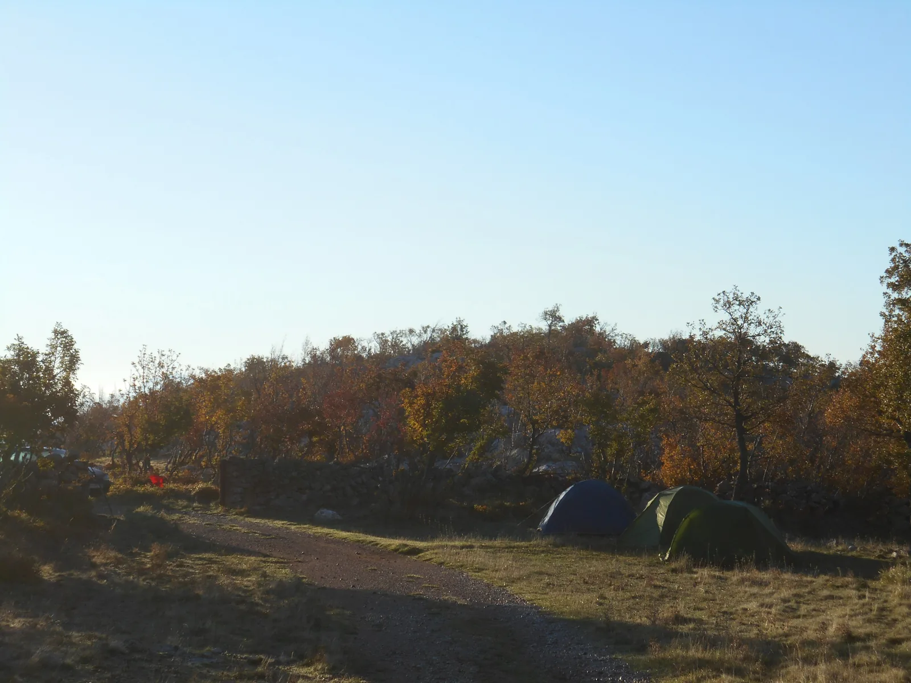

Svi putevi vode u Burinku
Nismo se okupali, nismo našli upitnik, nismo imali šta širiti, nismo čak ni nacrtali ništa. Ali smo "naboli" pravi put.

Napisala: Marta Malenica Fotografije: Marijan Sutlović
Na Burinci sam bila tri puta – niti jednom vratila se nisam istim putem kojim sam krenula. Za vikend 3.-5.11.2017. deveteročlana ekipa različitih ambicija, planova i iskustava uputila se u potragu za najboljim putem do Burinke. Nakon spavanja u Gornjim Čabrićima na savršeno popasenoj travici u dvorištu babe Anđe, krenuli smo starim kozjim putem prema Burinci. Dan je bio samo takav – za kratke rukave, a trosatna šetnja kroz divne krajolike bila je pravi gušt. Pošto nismo baš rano krenuli, nismo rano ni stigli na Burinku, a kako smo stvari za spavanje nadobudno ostavili kod auta – znali smo da nas čeka duuga noć.
Plan je bio da se podijelimo u tri ekipe: Marina, Petričević i Matija naoružali su se sredstvima za širenje i badićima kako bi preplivali jezero, došli na sam kraj kanala u Darinku i proširili upitnik koji nikako nije dao ovoj jami da se arihivra pod ˝istražena˝. Sutlović je bio u ekipi za fotkanje/crtanje uz pomoć ovogodišnjih školaraca Gabi i Nike koji su, između ostalog, imali prilike izvježbati prelazak čvora na previsu od 100-njak metara. Zle biologinje Anđela, PK i ja iskoristile smo priliku za bubarenje. Međutim, kako to već biva – planovi su tu da se mijenjaju.
Koliko kod hrabri, ludi, iskusni bili (ili samo ne htjeli priznati) spuštanje po zrakopraznom prostoru ogromne dvorane na 100-metarskom previsu u svima barem malo pobudi jače lupanje srca i ubrzano disanje. Pored idiličnog puta do jame i ogromne ulazne dvorane, upravo je taj previs možda čak i najveća atrakcija Burinke. U želji da ispratim plivače na putu prema Darinci i čujem njihov vapaj po ulasku u vodu pojurila sam za prvom ekipom prema jezeru. Kad sam stigla dočekao me Matijin slavljenički ples po dnu bivšeg jezera od kojeg je sada ostala samo jedna lokvica. Istina, nije bilo puno oborina u zadnje vrijeme ali za presahnulo jezero zaslužan je i Matijin sustav odvodnje namijenjen preusmjeravanju glavnog dotoka vode u jezero prema obližnjoj vertikali. U svakom slučaju – ništa od kupanja, tako da smo svi mogli bez šokova doći do Darinke.
Pukotina koju je trebalo proširiti nalazila se uz rub završne dvorane ispod sigovine. Međutim, u ovo doba godine nije bilo moguće osjetiti znatno strujanje zraka, a u potrazi za pukotinom došlo se do zaključka da je zatrpana i da bi trebalo iskopati kubik kamenja da joj se približi. Tako da se odustalo i od širenja iako je Marina htjela okinut koje punjenje pa makar i u prazno da ne bi ispalo da je uzalud sve nosila.
I tako su se naše ˝tri˝ ekipe stopile u jednu i našle na dnu nekadašnjeg jezera te odlučile jednostavno malo uživati u trenutku. Pojeli smo juhicu, divili se ambijentu i malo se naslikavali pa onda jedan - po jedan prema van. Čekanje na svoj red za penjenje iskoristili smo za obilazak ruba dvorane i skupljanje buba. I tako smo se svi opet skupili na ulazu uz nezaobilazno ognjište tik pred zoru. Oni koji su izašli ranije uspjeli su čak malo i ubiti oko, ali u pravilu svi smo bili neispavani i gladni te smo s prvim zrakama sunca krenuli natrag. Ovoga puta, sasvim slučajno, svi smo se složili da smo ˝naboli˝ najbolji put prema Čabrićima. Tim više što smo ga završili na domaćoj šljivi, šumskom medu i toplim pohanim tikvicama kod Anđinog susjeda, uz priče o novim perspektivnim objektima koje još trebamo pronaći.
Da rezimiramo: nije nužno napraviti neki veliki rezultat da bi izlet bio uspješan. Nismo se okupali, nismo našli upitnik, nismo imali šta širiti, nismo čak ni nacrtali ništa – ali ova dva dana vrijedila su najmanje za četiri i tako smo si barem u glavama produljili vikend i proveli ga u dobrom društvu i još boljem okruženju.
[gallery ids="1577,1578,1579,1580,1581,1582,1583,1584,1585" type="rectangular"]